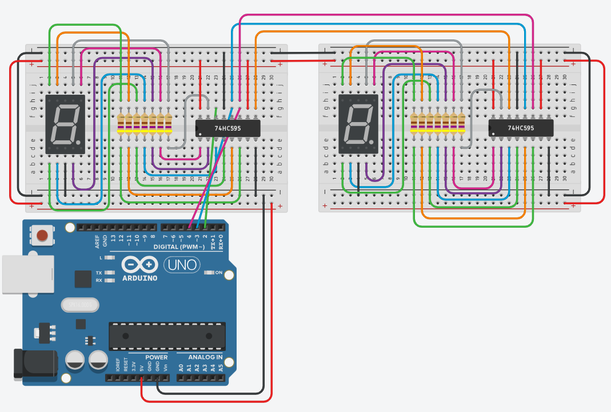

Plaats twee 74HC595 schuifregisters in cascade en stuur er twee 7 segment displays mee aan. Je telt af van 10 naar 0, zonder ook maar één extra pin van je Arduino te gebruiken.
Maar wat als je bijvoorbeeld meerdere 7 segment displays wil aansturen? Je kan de 74595 in cascade plaatsen. Op deze pagina kan je daar meer over lezen.
TLDR: verbind Q7S van de eerste 74595 met DS van de tweede. SHCP en STCP mag je gewoon doorverbinden met elkaar.
Q7S is de bit die aan de achterkant het schuifregister verlaat. Door die op DS van het tweede register aan te sluiten, vormen de twee IC's samen één lang schuifregister van 16 bits. Je schuift dus gewoon 16 keer in plaats van 8 keer, en omdat STCP van beide registers aan elkaar hangt, springen alle 16 uitgangen op hetzelfde moment naar hun nieuwe waarde.
In TinkerCAD kan je het schema openen met deze link.

De Arduino hangt nog steeds aan dezelfde drie pinnen als in de vorige oefening: DS op pin 2, STCP op pin 3 en SHCP op pin 4. Enkel het tweede schuifregister komt erbij.
Als je de vorige oefening hebt gemaakt dan heb je nu 3 subroutines: three(), two() en one(). Breid uit zodanig dat je aftelt van 10 tot 0.
De bits die je eerst naar buiten schuift, schuiven het verst door en belanden in het tweede schuifregister. Wat je als laatste inschuift, blijft in het eerste register zitten. De volgorde waarin je de twee cijfers wegschrijft bepaalt dus op welk display ze terechtkomen.
Sla je oefening op.
Overloop volgende checklist om je oefening zelf te evalueren:
Welk display de tientallen toont, hangt af van welk schuifregister jij aan je Arduino hebt gehangen. Deze oplossing gaat ervan uit dat het eerste register (het register dat aan pin 2, 3 en 4 hangt) het linkse display aanstuurt. Ziet het er bij jou omgekeerd uit, wissel dan in toonGetal() de twee schuifCijfer()-regels om.
In plaats van tien aparte procedures zet je de tien cijferpatronen in één array. schuifCijfer() schuift dan acht bits naar buiten zonder te latchen, en toonGetal() roept die twee keer na elkaar op en geeft pas op het einde één stijgende flank op STCP. Zo verschijnen beide cijfers op exact hetzelfde moment.
De drie procedures three(), two() en one() uit de vorige oefening zijn hier vervangen door die ene array: tien procedures overtikken zou hetzelfde patroon tien keer herhalen.
const int pinDS = 2; // Data ingang van het eerste schuifregister
const int pinSTCP = 3; // 0 naar 1 = schuifregister naar storage register
const int pinSHCP = 4; // 0 naar 1 = seriële ingang naar schuifregister
// Volgorde van de segmenten: Q0=a, Q1=b, Q2=c, Q3=d, Q4=e, Q5=f, Q6=g, Q7=dp
const bool cijferPatronen[10][8] = {
{1, 1, 1, 1, 1, 1, 0, 0}, // 0
{0, 1, 1, 0, 0, 0, 0, 0}, // 1
{1, 1, 0, 1, 1, 0, 1, 0}, // 2
{1, 1, 1, 1, 0, 0, 1, 0}, // 3
{0, 1, 1, 0, 0, 1, 1, 0}, // 4
{1, 0, 1, 1, 0, 1, 1, 0}, // 5
{1, 0, 1, 1, 1, 1, 1, 0}, // 6
{1, 1, 1, 0, 0, 0, 0, 0}, // 7
{1, 1, 1, 1, 1, 1, 1, 0}, // 8
{1, 1, 1, 1, 0, 1, 1, 0} // 9
};
void setup()
{
pinMode(pinDS, OUTPUT);
pinMode(pinSTCP, OUTPUT);
pinMode(pinSHCP, OUTPUT);
}
void risingEdge(int pinNummer)
{
digitalWrite(pinNummer, LOW);
digitalWrite(pinNummer, HIGH);
}
// Schuift 8 bits naar buiten, maar latcht nog niet: zo kunnen we eerst
// beide cijfers klaarzetten voor er iets zichtbaar wordt.
void schuifCijfer(int cijfer)
{
for (int i = 7; i >= 0; i--)
{
digitalWrite(pinDS, cijferPatronen[cijfer][i] ? HIGH : LOW);
risingEdge(pinSHCP);
}
}
void toonGetal(int getal)
{
int tientallen = getal / 10;
int eenheden = getal % 10;
// Wat je eerst inschuift, schuift door naar het tweede register.
schuifCijfer(eenheden);
schuifCijfer(tientallen);
risingEdge(pinSTCP); // pas nu springen beide displays tegelijk om
}
void loop()
{
for (int getal = 10; getal >= 0; getal--)
{
toonGetal(getal);
delay(1000);
}
}